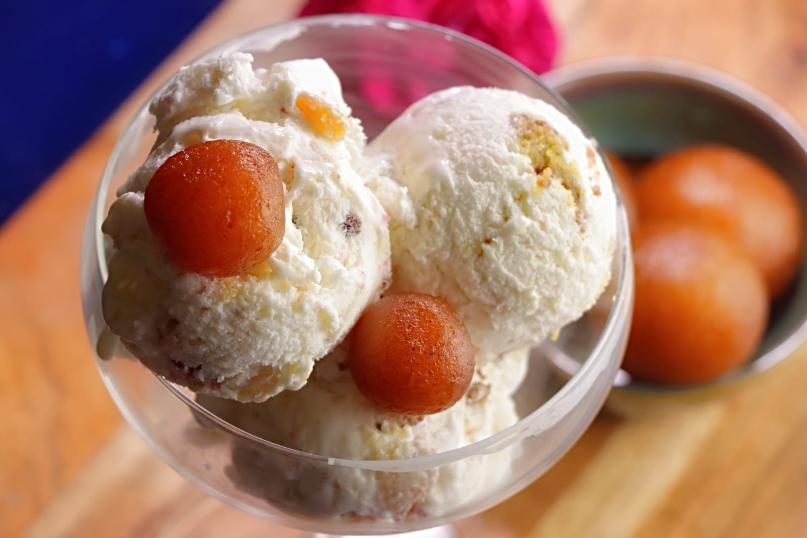

INGREDIENTS:
- 1. 1 cup Thick Milk (250 ml)
- 2. 1/4 cup Milk Powder
- 3. 1/2 tsp Corn Flour
- 4. 2 tbsp Sugar
- 5. 10 Anguri Gulab Jamun
- 6. 1 cup Whipping Cream
- 7. 1/2 cup Condensed Milk
- 8. 1 tbsp Liquid Glucose
- 9. 1/2 tsp Cardamom Powder
- 10. 1/4 tsp Mava Essence
INSTRUCTIONS:Add Milk Powder, Corn Flour, Liquid Glucose and Sugar to Milk. Mix well and let it boil
once.
Then Liquid Glucose will melt and dissolve into the Milk.
After the Milk boils, let it simmer for 30 seconds and remove it from the fire. Let it cool thoroughly.
Beat the molten and cold Whipped Cream at high speed until it has stiff peaks.
Add Cardamom Powder, Mava Essence and beat until stiff peaks appear.